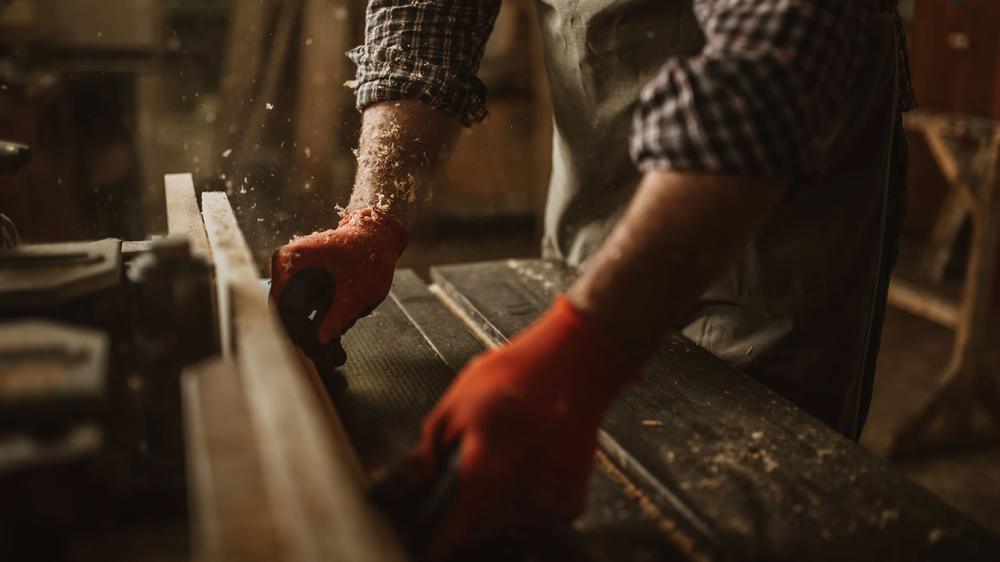
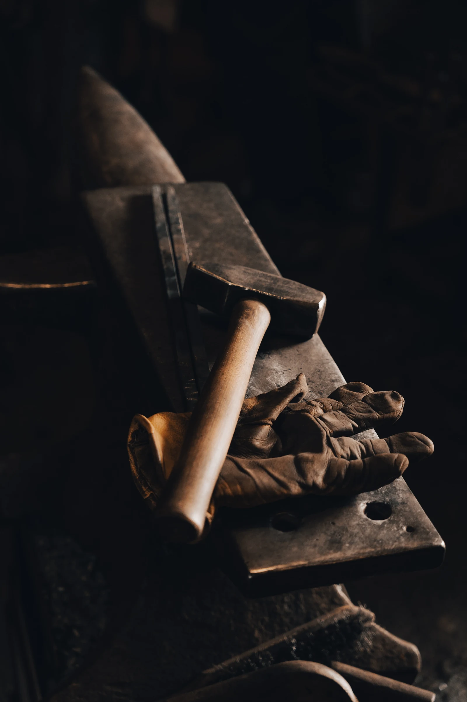

Stolarstwo Grzesik

Jesteśmy zakładem
z długoletnią tradycją.
Dzięki naszej pasji i wiedzy dostarczamy naszym klientom realizacje najwyższej jakości.
Zobacz realizacjeStolarstwo Grzesik to renomowana firma
stolarska z wieloletnim doświadczeniem,
działająca na terenie województwa opolskiego,
gotowa obsłużyć klientów z całej Polski oraz
za granicą w przypadku większych zamówień.
Naszą priorytetową wartością jest dbałość
o środowisko, dlatego używamy wyłącznie
certyfikowanego drewna oznaczonego
certyfikatem FSC, co stanowi gwarancję
zrównoważonego i ekologicznego podejścia
do naszej działalności.
Zatrudniamy jedynie doświadczonych stolarzy,
których pasja do rzemiosła przekłada się na
jakość naszych produktów i usług.
Nasze usługi obejmują pełen
zakres działań, począwszy od
precyzyjnych pomiarów, poprzez
doradztwo w wyborze
najlepszych rozwiązań, aż po
produkcję, transport oraz
profesjonalny montaż.
Dzięki kompleksowemu
podejściu do każdego projektu,
jesteśmy w stanie zrealizować
nawet najbardziej wymagające
zamówienia, zapewniając
naszym klientom satysfakcję i
trwałe rozwiązania stolarskie.

Nasze realizacje
Zaufali nam
Zdzieszowice
Śląska
Opolskiego
RZYMSKOKATOLICKA
ŚW. ANTONIEGO